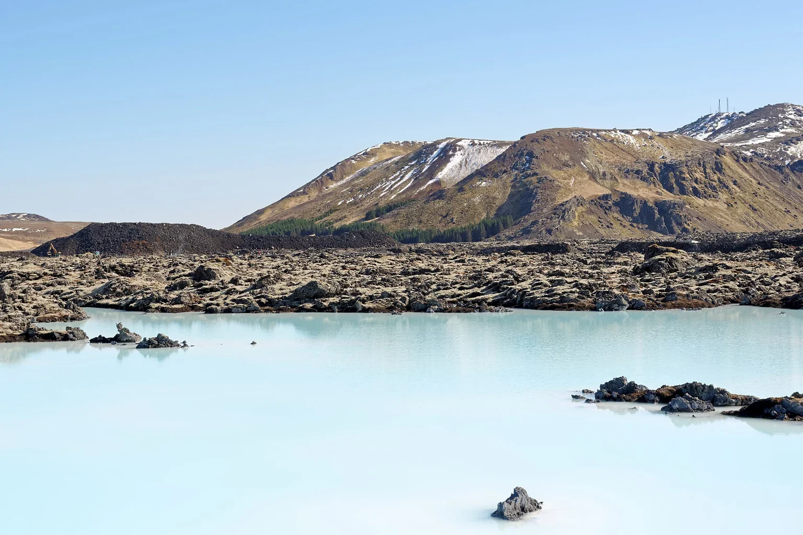

Iceland
Reykjavík is a city base for shorter outings; Reykjanes suits geothermal bathing. More remote lodges require realistic winter-road and daylight plans.
Iceland
Dark shorelines, steam rising into cold air, and a sky worth waiting for.
Your preferences. Thoughtful options. Personal attention throughout.

Iceland
Reykjavík is a city base for shorter outings; Reykjanes suits geothermal bathing. More remote lodges require realistic winter-road and daylight plans.
A few considered examples. Your personal selection extends beyond these pages, with stays and privileges chosen around your preferences.
Blue Lagoon, Grindavík area, Reykjanes Peninsula, Iceland
A suite-led stay places geothermal bathing and a subterranean spa within the lava landscape itself.
Who it suits
Adults and older families drawn to bathing, architecture and a slower opening or ending to an Iceland journey.
Leave the first morning for the water instead of the road. The lava landscape gives the bathing its context, while a quiet lunch allows the day to remain unhurried. Later, return to the suite before a reserved dinner at Moss on one of its operating evenings. A wider Iceland route can follow, but the Retreat works well when it has time of its own. Keep road and safety updates close to the plan: the very geology that makes this setting compelling can also change access.
Getting there & getting around
Road access via the currently authorised route; allow the safety plan to override the itinerary.
Before choosing
The hotel currently lists daily operation. Retreat Spa minimum age is 12, with under-18s accompanied. Check official Reykjanes alerts and road access before travel.
A different choice
A Reykjavík base puts city dining and other bathing options closer; the Retreat makes Blue Lagoon the focus.
Details checked · 26 Oct 2026
| Property / setting | Style / suggested fit | Main reason to choose it | Accommodation | Facilities | Access / transport | Season / practical considerations |
|---|---|---|---|---|---|---|
| The Retreat at Blue Lagoon Iceland Blue Lagoon, Grindavík area, Reykjanes Peninsula, Iceland | Geothermal spa retreat | A suite-led stay places geothermal bathing and a subterranean spa within the lava landscape itself. | Suites are conceived around the surrounding volcanic terrain. | Retreat Spa access is included during the published stay programme; departure-day use has separate terms. | Road access via the currently authorised route; allow the safety plan to override the itinerary. | The hotel currently lists daily operation. Retreat Spa minimum age is 12, with under-18s accompanied. Check official Reykjanes alerts and road access before travel. |
Browse Hotels & Private Stays ↗ · Private villas & group stays ↗
A selection to inspire your next evening. In every destination, we shape a shortlist around you, with further tables, experiences and privileges shared personally with our clients. Tell us your taste; your time is ours to look after.
Explore by cuisine & occasion ↗
One reservation or every evening of your stay. A wider world of possibilities, shared personally and arranged around you.
Warm water and an ocean-facing pause can make a gentler counterpoint to a winter landscape day.
Season According to the lagoon’s current operating calendar
Public booking with the chosen lagoon; confirm age policy, package and road conditions.
Discuss this experience ↗Tell us when you will be here. We will share occasions and experiences to shape your time around.
Browse Events & Experiences ↗For a change from the Alps, begin with a small lodge or a city hotel and a route that respects winter daylight. A guided landscape day can lead back to geothermal bathing and a dinner that asks nothing more of the evening. A couple may want stillness; a family may prefer shorter outings and warm pauses between them.
We can explore geothermal lagoons, snowy landscapes and guided winter excursions, with routes adapted to roads and conditions. On suitable dark, clear nights, a northern-lights outing offers the possibility of a sighting, never a promise. Leave room in the stay for the weather to shape the day.
Our attention continues beyond the reservation. Contact us 24/7 during your stay, including for a change of plan or a spontaneous idea. We explore suitable options and confirm the arrangements you choose.
Tell us which setting or property appeals, approximate dates and how many people are travelling. You do not need a complete itinerary.
Begin an EnquiryContact us 24/7. Our team will respond personally; email info@zelrocprive.com whenever it suits you.
A little inspiration—or something already in mind?